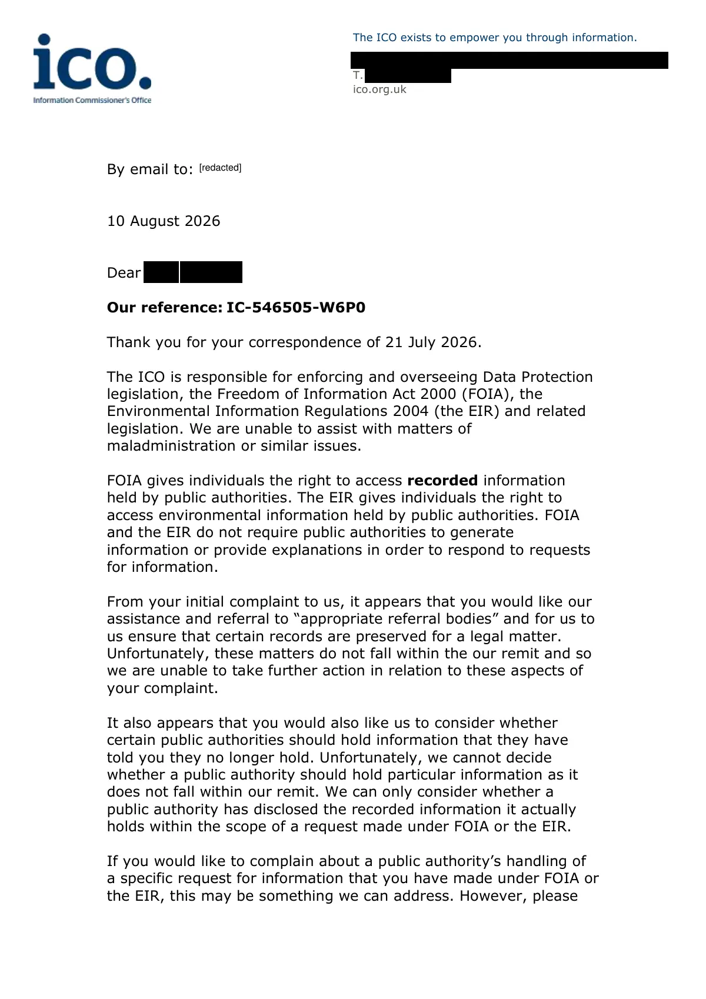

GHF-E106-R28-A1 redirected elsewhere
IC-546505-W6P0 letter

Transcript
The ICO exists to empower you through information. [address redacted] T. [phone redacted] ico.org.uk By email to: 10 August 2026 Dear Requester , Our reference: IC-546505-W6P0 Thank you for your correspondence of 21 July 2026. The ICO is responsible for enforcing and overseeing Data Protection legislation, the Freedom of Information Act 2000 (FOIA), the Environmental Information Regulations 2004 (the EIR) and related legislation. We are unable to assist with matters of maladministration or similar issues. FOIA gives individuals the right to access recorded information held by public authorities. The EIR gives individuals the right to access environmental information held by public authorities. FOIA and the EIR do not require public authorities to generate information or provide explanations in order to respond to requests for information. From your initial complaint to us, it appears that you would like our assistance and referral to “appropriate referral bodies” and for us to us ensure that certain records are preserved for a legal matter. Unfortunately, these matters do not fall within the our remit and so
Read more
we are unable to take further action in relation to these aspects of your complaint. It also appears that you would also like us to consider whether certain public authorities should hold information that they have told you they no longer hold. Unfortunately, we cannot decide whether a public authority should hold particular information as it does not fall within our remit. We can only consider whether a public authority has disclosed the recorded information it actually holds within the scope of a request made under FOIA or the EIR. If you would like to complain about a public authority’s handling of a specific request for information that you have made under FOIA or the EIR, this may be something we can address. However, please [redacted] The ICO exists to empower you through information. [address redacted] T. [phone redacted] ico.org.uk submit a new complaint to us using our FOI Complaint Form. When doing so, please provide us with the following information: • Your request for information • The public authority’s response to your request • Your request for an internal review or complaint to the public authority • The public authority’s internal review response • Your grounds for complaint If you would like to complain about a public authority’s (or multiple public authorities’) handling of more than one request for information, you will need to submit a new separate complaint to us for each request. Before submitting a complaint, we suggest that you review the following guidance on what to expect when submitting a complaint to us. Thank you for contacting the Information Commissioner’s Office Yours sincerely, Ella Cuthbert Lead Case Officer Information Commissioner’s Office [phone redacted] For information about what we do with personal data see our privacy notice at www.ico.org.uk/privacy-notice. To read about our commitment to high standards of customer service see our service standards at www.ico.org.uk/about-the- ico/our-information/our-service-standards/.
Artifact description
Explains the ICO's remit, declines to address preservation and record-existence issues, and directs a new complaint to be submitted via form.
| Catalogue ID | GHF-E106-R28-A1 |
|---|---|
| What it is | PDF document from Information Commissioner's Office. Attached to an email received on 10 August 2026, their reference IC-546505-W6P0. 2 pages. |
| From | Information Commissioner's Office |
| Email received | 10 August 2026 |
| Their reference | IC-546505-W6P0 |
| Pages | 2 |
| File | Letter to SB.pdf (90 KB) |
| State | Read |
Our integration
Part of the records enquiry thread with Information Commissioner's Office opened 10 August 2026. The thread's standing classification is “redirected elsewhere”.
Concern to test: whether this reply answers the question as asked, or a narrower one. Not checked against the original request wording here.
What cuts against the case: a covering letter, form or acknowledgement decides nothing either way; it is kept so the thread is complete.
Related: The covering email · What They Don’t Say: WTDS-76049b3c-1 · EV-0499 in the evidence catalogue · Timeline · Disclosure Dartboard